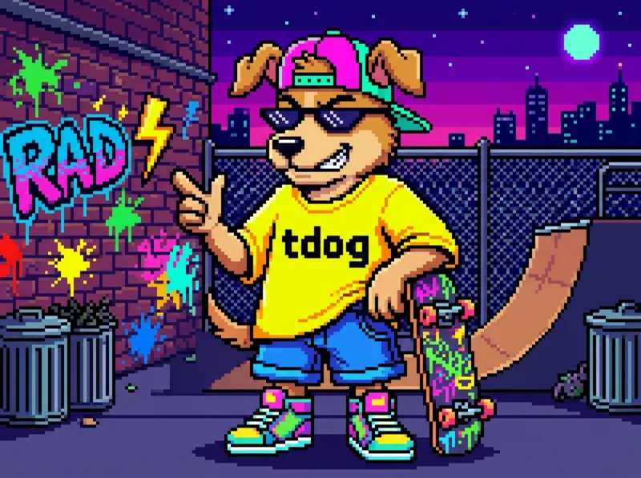
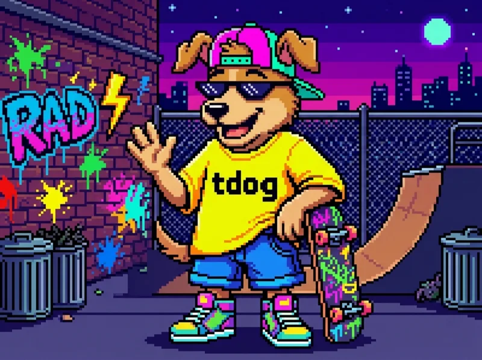

Sign in to get your shells back where you left them.
Mockup: any password triggers the wrong-password gag. Type radical to get in.
Paste the setup token from the server log, then pick a password.
Tape empty. 12 characters minimum.
Enter the 6-digit code from your authenticator app.

Ah ah ah!
Wrong password. 4 tries left before a 1-minute lockout.

Ends 3 shells in 2 scenes. Unsaved work in them is gone.
The shell survives closing the tab. Reattach later.
Live preview
Coming in v0.4
This tape hasn't been recorded yet.